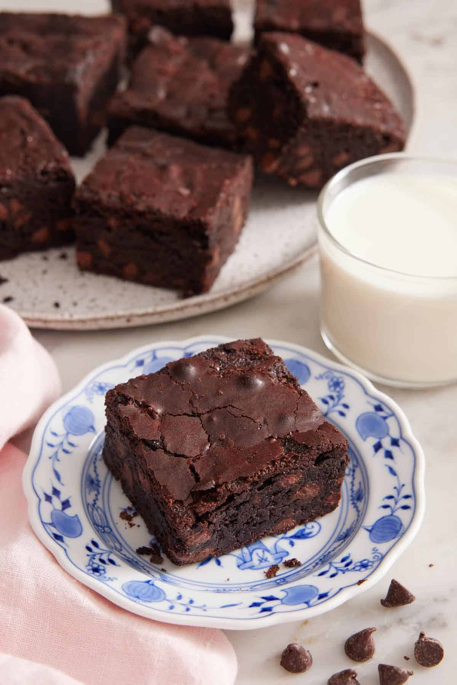

Brownie

This is the brownie recipe of your dreams if you want gooey, fudgy, decadent brownies with a shiny, crackly top.
Ingredients
- 1 cup unsalted butter
- 2 cups granulated sugar
- ¾ cup unsweetened cocoa powder
- 3 large eggs
- 1 tablespoon vanilla extract
- 1 teaspoon salt
- 1 cup all-purpose flour
- 1½ cups semisweet chocolate chips
Instructions
- Preheat the oven to 350°F. Lightly grease an 8×8-inch baking pan with baking spray and line it with parchment paper.
- In a large microwave-safe bowl, melt the butter in the microwave in 20-second intervals stirring between each one until fully melted, about 2 minutes. Add the sugar and cocoa and whisk vigorously for 30 seconds. Whisk in the eggs, vanilla, and salt.
- Add the flour and chocolate chips and mix together with a spatula until just combined. Spread the batter into the prepared pan. (You can sprinkle the top with more chocolate chips, if desired.)
- Bake for about 35 to 40 minutes, inserting a toothpick into the center to check doneness, and removing it with several moist crumbs for fudgy brownies or only a few crumbs for cakey brownies. Let the brownies cool completely in the pan before slicing.